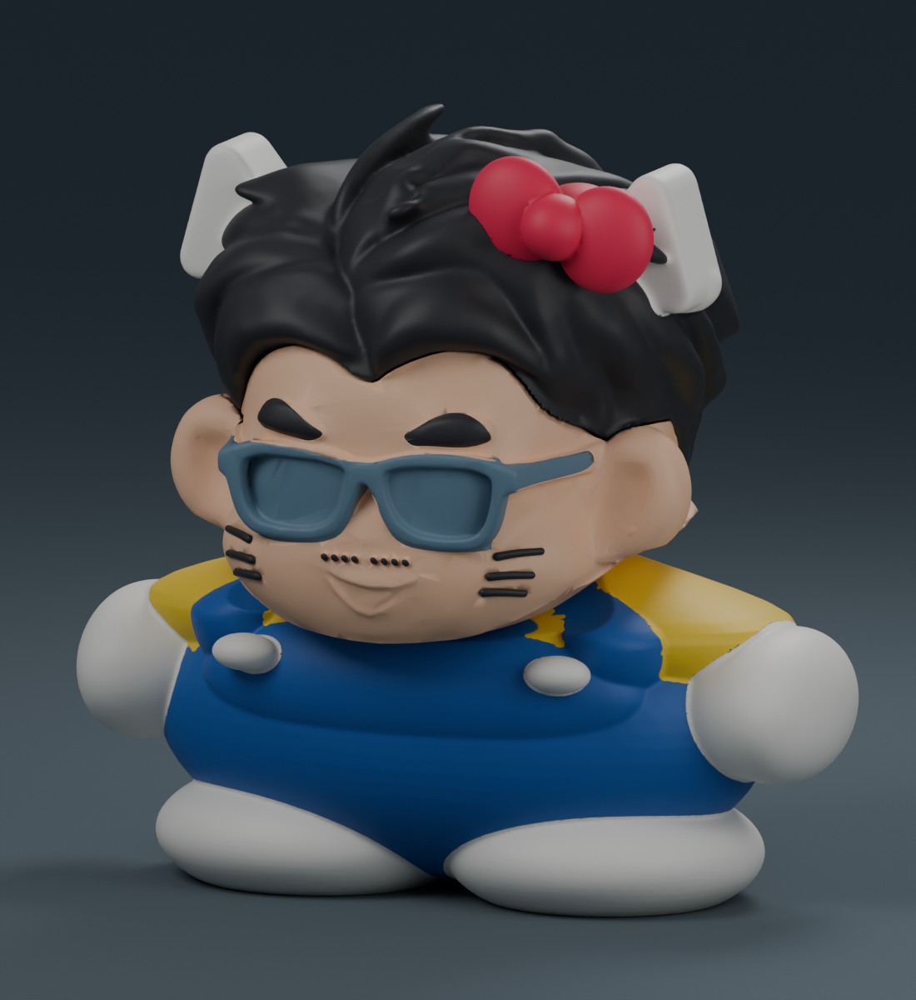

Hello Kitty 小陳晉・原配色一體成型
雙頰各三道短圓立體貓鬚，貼合臉頰並沿用既有黑色線材；單色版可自行上色。已有目前寬身版身體與頭髮時，只需重印 02 臉即可升級。維持寬身比例、融合貓耳與紅色蝴蝶結。

整隻一次列印，不需黏合頭、臉與身體。色塊是同一個物件內的材料區域，可在 Bambu Studio 的物件清單指定各區的線材。
完整原配色共七色，需要七個可用供料槽位；單台四槽 AMS 無法一次提供七色。若只有四槽，請選分件組裝原配色版。
- 槽位 1：藍色吊帶裝（#145CAE）
- 槽位 2：膚色臉（#F5C39E）
- 槽位 3：黑髮眉毛鬍子與貓鬚（#27272B）
- 槽位 4：藍灰眼鏡（#607F92）
- 槽位 5：白色貓耳手腳鈕扣（#F3F0E7）
- 槽位 6：黃色上衣（#F3CD29）
- 槽位 7：紅色蝴蝶結（#E82750）
請以「開啟專案」載入 3MF，保留各部位的顏色與線材分配。預設為 X1 Carbon／0.4 mm／PLA／0.16 mm 層高，含樹狀支撐、底邊和多色擦料塔。依實際 AMS 槽位重新對應線材。
範例估計 42 小時 43 分，耗材 763.23 g。原配色列印會換線並產生擦料；若希望縮短時間，可在同一商品選擇分件組裝。
約 10 公分高。已通過材料區域封閉性、連通、配置與切片檢查；尚未實體試印。
下載原配色一體成型 3MF